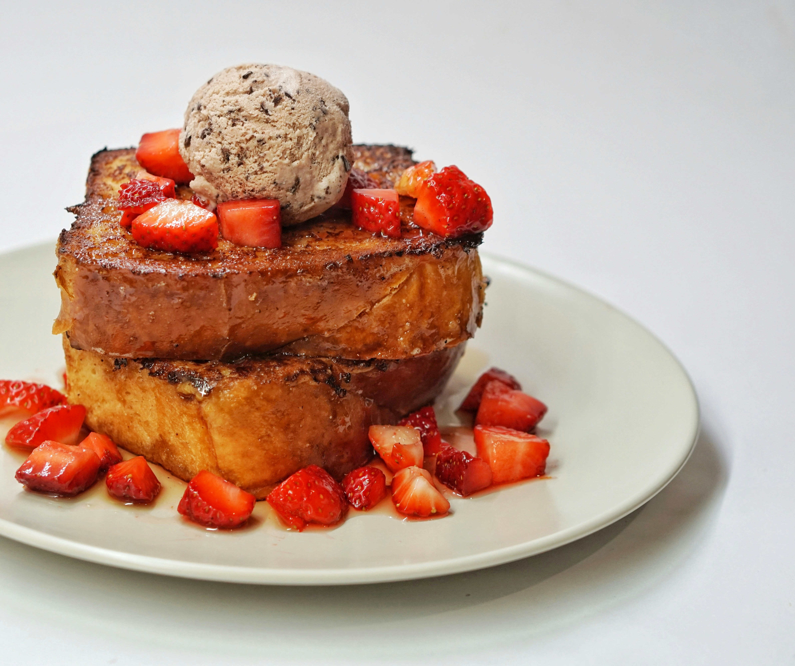

French Toast

Description
The best French toast recipe.
Ingredients
- 1/4 cup flour
- 1 cup milk
- 3 eggs
- 1 tablespoon white sugar
- 1 teaspoon vanilla extract
- 1/2 teaspoon ground cinnamon
- 1 pinch salt
- 10 slices bread
Steps
- Whisk flour and milk. Add eggs, sugar, vanilla extract, cinnamon, salt and whish again.
- Soak bread slices and lightly heat a frying pan.
- Cook bread until golden brown on each side.